Префектура Сага · Карацу · керамика и чай
«Карацу якимон мацури»: весенний праздник керамики и чайная церемония для новичков
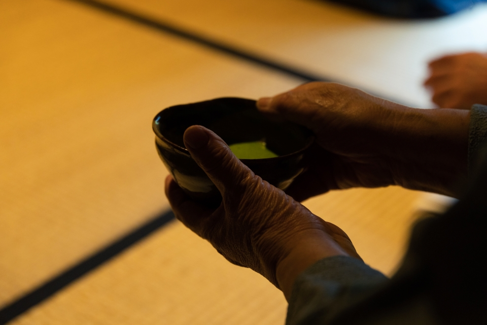
В японском чайном мире чаши издавна ранжируют поговоркой «первая Раку, вторая Хаги, третья Карацу». Город Карацу в префектуре Сага каждую весну устраивает праздник своей керамики, и попасть на него может любой, даже тот, кто ни разу не держал в руках чайную чашу.
История
Город керамики и чая
Карацу стоит на северо-западе префектуры Сага, на берегу пролива Гэнкай-нада, и в Японии его знают как столицу керамики. Своим появлением керамика Карацу обязана войне. В 1592–1598 годах Хидэёси Тоётоми, объединитель Японии, дважды посылал войска в Корею, и оттуда в эти края привезли гончаров. Они и создали местную керамику.
Правителем Карацу стал Хиротака Тэрадзава (1563–1633), даймё из ближнего круга Хидэёси и знаток чая. Он сделал местную керамику известной по всей стране, и город разбогател. Вместе с керамикой в Карацу пришла и чайная культура. Правители потом менялись не раз, но горожане хранили её из поколения в поколение.
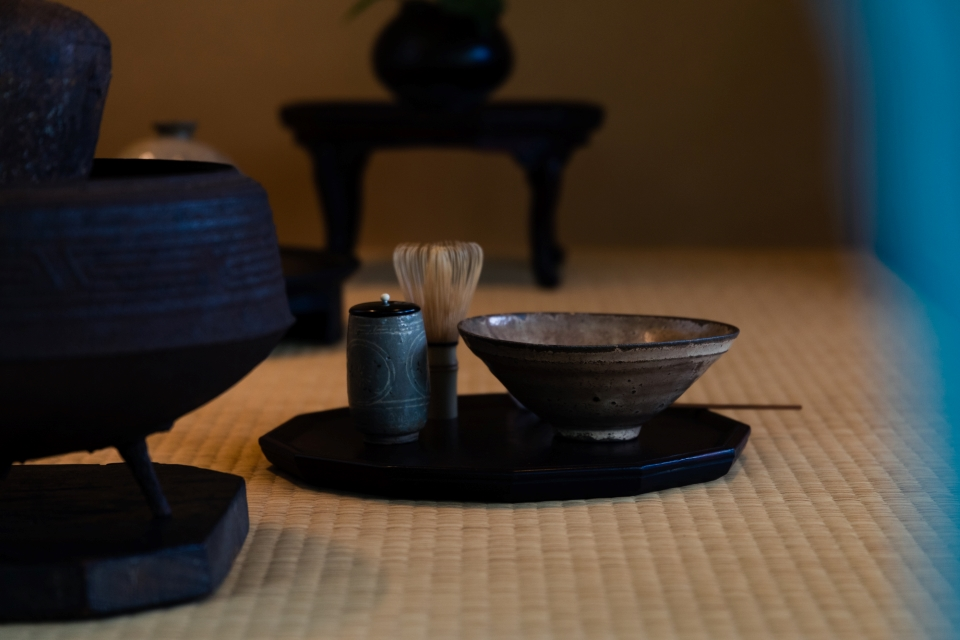
Отсюда и место керамики Карацу в чайном рейтинге: из множества японских стилей она входит в первую тройку. Красивый замковый город с историей, которая тянется с конца XVI века, это ещё и столица чайной культуры.
Фестиваль
Золотая неделя в цвете глины
Каждый год в Золотую неделю, на рубеже апреля и мая, когда с моря дует лёгкий ветер, в Карацу проходит фестиваль «Карацу якимон мацури», то есть «праздник керамики Карацу». В 2019 году он прошёл в восьмой раз, а в 2026 году состоялся уже 14-й, с 29 апреля по 5 мая.
На эти дни весь город отдаётся керамике. Повсюду идут мероприятия: гости беседуют о посуде с самими гончарами или пьют днём сакэ из чарок гуиноми работы местных мастеров. Ярмарка фарфора в соседней Арите известна толпами, а в Карацу ценят другое: неторопливый и внимательный приём гостей.
Чайная церемония
Приходите просто так
Самое популярное событие фестиваля это чайная церемония в бывшем доме Котаро Оосимы. Места на неё раскупают мгновенно, заявки приходят из Токио и окрестностей, из Осаки и Киото. Церемонию проводят с размахом, используя весь старинный дом, где хорошо сохранился дух прежних времён.
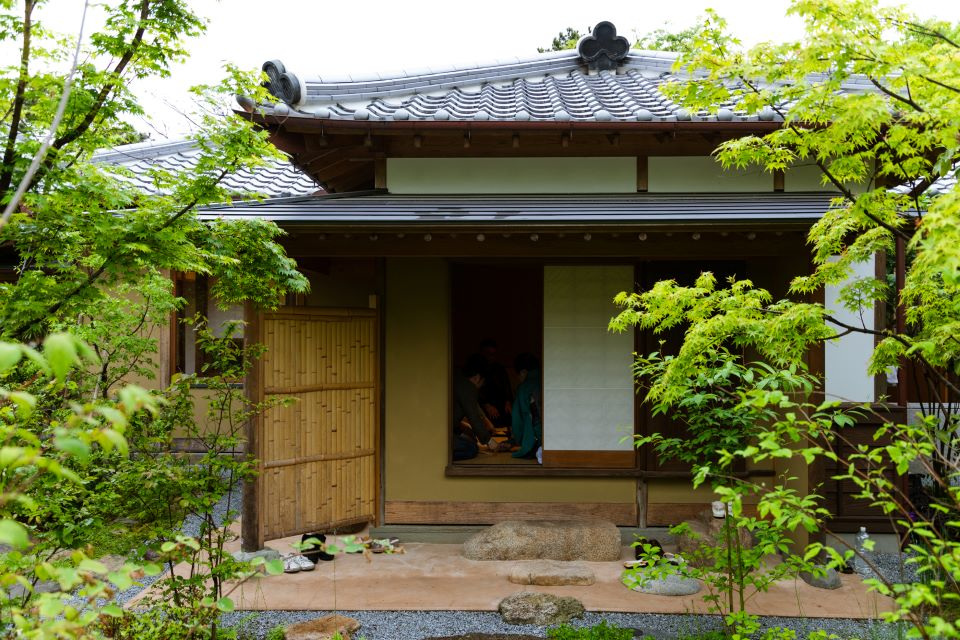
«Правил чайной церемонии знать не нужно, приходите просто так. Нам хочется, чтобы люди для начала просто соприкоснулись с миром чая»
хозяин чайной церемонии
Хозяину помогают чайные мастера Карацу из разных школ, и все они встречают гостей с улыбкой. Новичкам здесь действительно рады. Порог низкий, но сама церемония совершенно серьёзная. Чай и угощение подают в работах известных мастеров Карацу, а ещё в древней керамике Карацу рубежа XVI–XVII веков и в корейской посуде эпохи Чосон. Такую церемонию трудно найти где-то ещё в Японии, и её популярность легко понять.
Хозяин церемонии, буддийский монах из Кобе, давно и горячо любит керамику Карацу. Его необычные чаепития, например «чайная церемония с такояки» или «итальянский чайный стол», обсуждают и чайные мастера, и местные жители.
Хозяин
Как глина вернула покой
Путь хозяина к керамике Карацу начался в 1995 году с трагедии. Во время Великого землетрясения Хансин-Авадзи его придавило обломками дома, и он был на грани смерти. Землетрясение унесло жизни его сестры и племянницы. С тех пор запах земли, который он чувствовал под завалами, стал для него травмой: даже вид вещей из глины причинял ему боль.
Через несколько лет друг уговорил его съездить к гончарам Бидзэна, в префектуру Окаяма. Он поехал нехотя, но, обходя мастерские, вдруг понял, что страх исчез, а керамика его успокаивает.
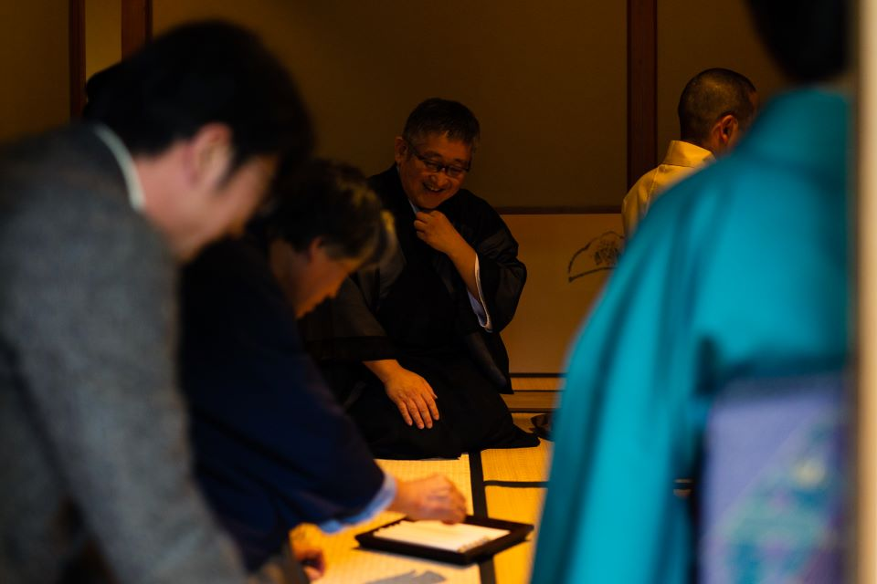
С тех пор он стал собирать керамику. Знатоки говорят: «кувшин для сакэ из Бидзэна, чарка из Карацу», и эта поговорка сама привела его к посуде Карацу. Её главное достоинство, по его словам, в грубоватой, но строгой фактуре глины. Потом он увлёкся и корейской керамикой, а оттуда, как он смеётся, «было уже не уйти» от чайной церемонии.
Поворот случился, когда он случайно попал на «Карацу якимон мацури». Там он познакомился с местными гончарами и поварами, а на следующий год устроил благотворительное чаепитие в помощь пострадавшим от землетрясения в Кумамото. Оно имело успех и стало постоянной частью фестиваля.
Программу церемонии вместе с хозяином придумывают чайные мастера, гончары и повара Карацу. В 2019 году, когда в Японии началась новая эра Рэйва, темой стало «От народного ремесла к чайной церемонии»: гостям показывали, как чайные мастера конца XVI века находили утварь для чая среди простой посуды Карацу, Кореи и разных уголков Японии.
Три части
Беседка, обед и чайная комната
Церемония 2019 года проходила в трёх местах. Начали в беседке среди яркой зелени. Приглашённый буддийский монах угощал гостей корейскими сладостями, подавал чай в посуде эпохи Чосон и рассказывал о Соэцу Янаги и других основателях движения за народное ремесло, о посуде и свитках.
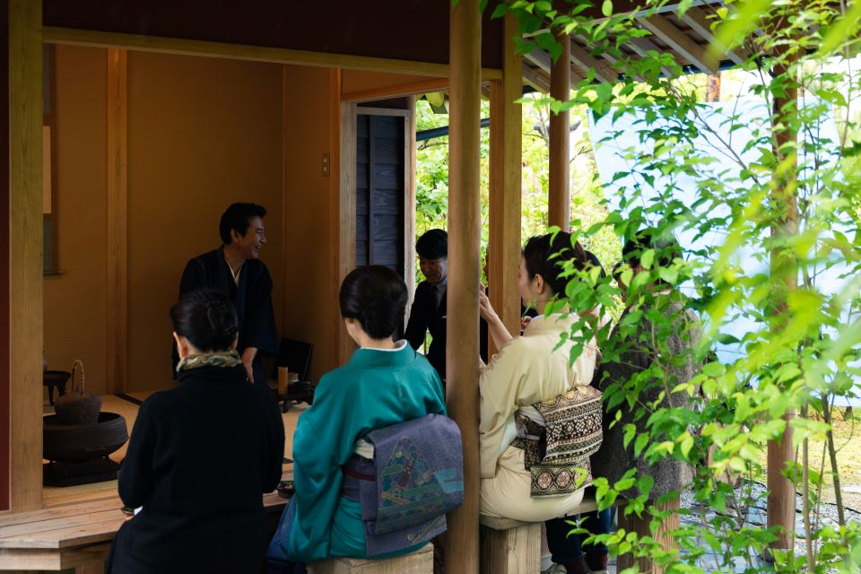
Гости охотно включались в разговор. Звучали и простые вопросы вроде «что это за сладость?», и совсем знаточеские: «к какому времени относится эта корейская чаша?». Атмосфера была лёгкой, и общий язык находили даже те, кто ничего не понимал в чайной церемонии.
Затем все перешли в главный дом на кайсэки, чайный обед. Его готовил ресторан японской кухни «Хирата», о котором много говорят в Карацу, и почти всё в нём было из местных продуктов. Гости разговорились, а местное сакэ «Манрэй», поданное в нужный момент, окончательно растопило лёд. Вся посуда была работы известных гончаров Карацу, и гости брали её в руки и проверяли, насколько она удобна.
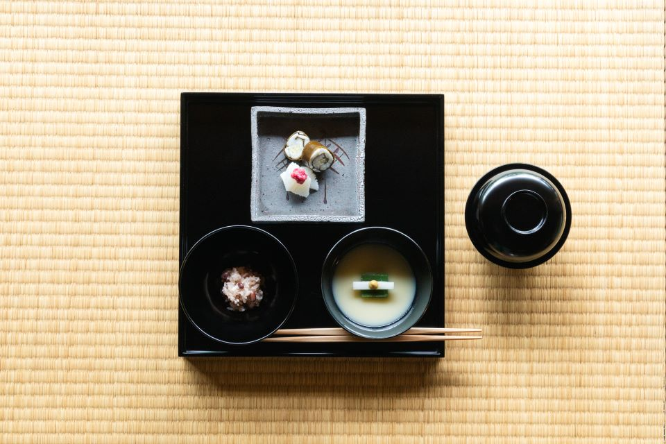
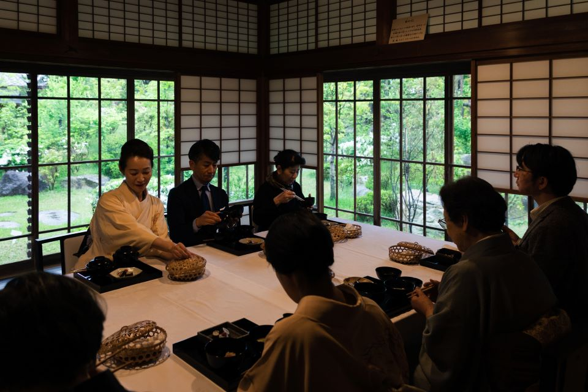
Чайная комната
Сэмбэй с тем же рисунком, что на чаше
Последняя часть проходила в старинной чайной комнате дома Котаро Оосимы. Пока гости рассматривали свиток и цветы в нише, тихо вошли хозяин церемонии и мастер керамики Карацу.
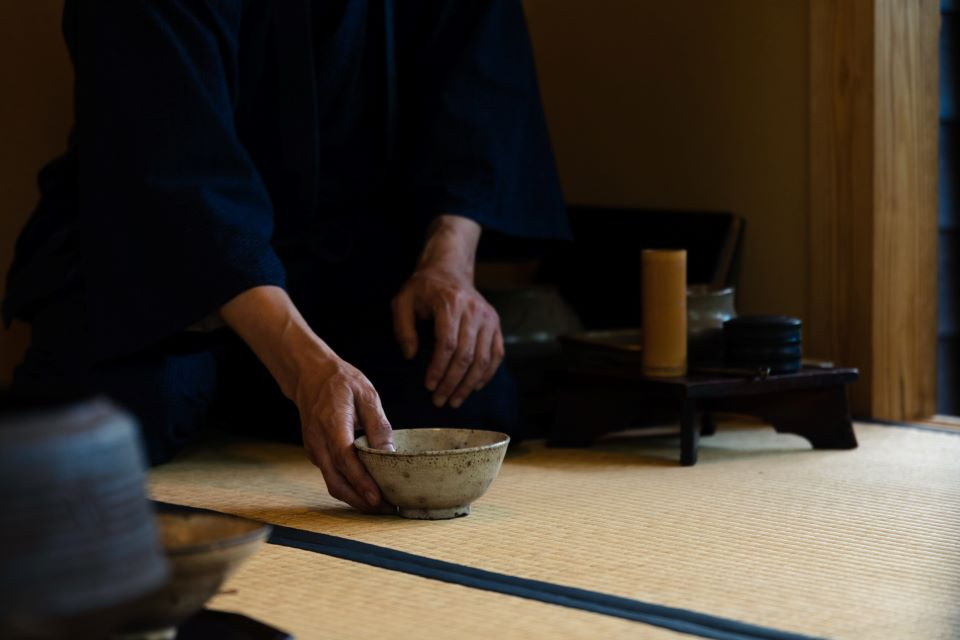
Сначала подали сладости, сделанные на заказ. Густой чай койтя гости пили из корейской чаши «комогай» эпохи Чосон: так тема церемонии воплотилась прямо в руках. Чай, который мастер сбил неторопливо и тщательно, был ароматным и почти сливочным.
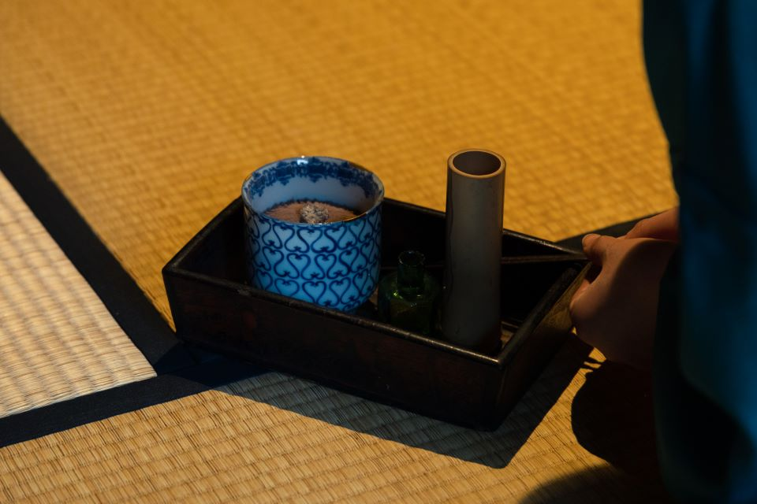
К жидкому чаю усутя подали неожиданное угощение: рисовые крекеры сэмбэй. Это «тохэн-сэмбэй», «крекеры-черепки», которые придумали вместе Тароэмон Накадзато XIV, один из самых известных мастеров керамики Карацу, и местная кондитерская «Цурумару». Рисунок на них повторяет роспись древней керамики Карацу рубежа XVI–XVII веков. Для этой церемонии крекеры сделали на заказ с тем же рисунком, что и на расписной чаше Карацу из коллекции хозяина. Гости сначала выбирали сэмбэй, а потом перед ними ставили старинную чашу с таким же узором, и в ней подавали чай.
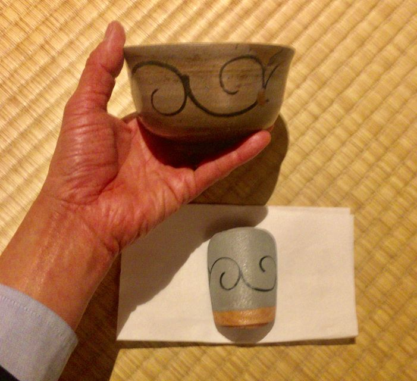
Финал
Рассмотреть посуду
После чая гостям дали рассмотреть утварь. Хозяин рассказывал о каждой вещи, и многие, наверное, впервые почувствовали, что чайная церемония может быть такой весёлой и наполняющей. Напряжения не было вовсе, только спокойствие. Понятно, почему чайная церемония фестиваля так притягивает людей.
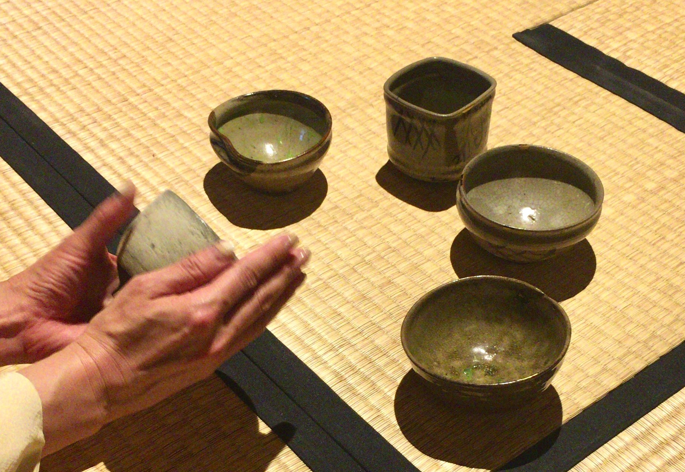
«Карацу якимон мацури»
- Адрес
- префектура Сага, Карацу, центр города
- Даты
- ежегодно в Золотую неделю (в 2026 году с 29 апреля по 5 мая)
Фото: Коитиро Фудзимото.